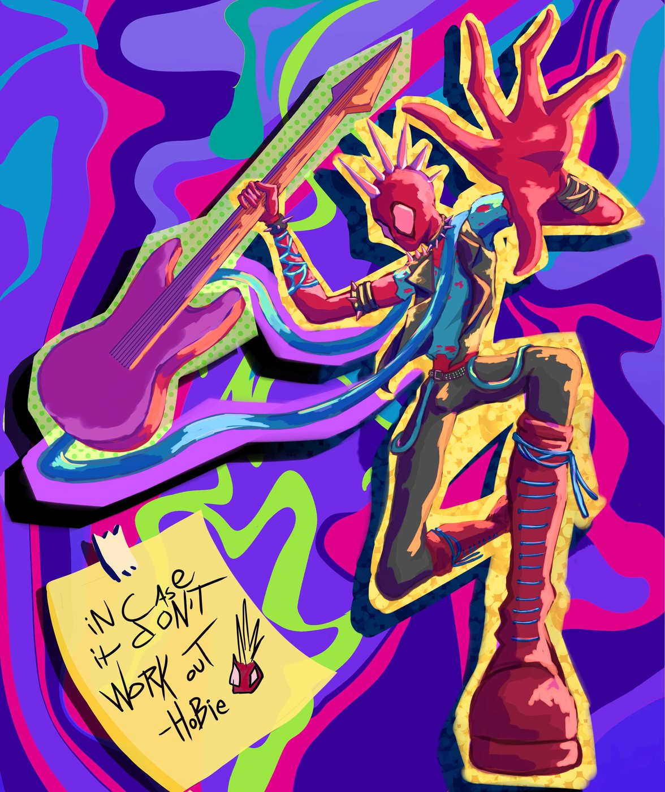

Spider-Punk: In case it don't work out
Un fan art lleno de energía: Spider-Punk en plena acción, con la guitarra en alto y una mano abierta hacia quien mira.
Sobre la ilustración
Esta ilustración está inspirada en Spider-Punk (Hobie Brown), el personaje del universo de Spider-Man. Se le ve en una pose de salto, con la guitarra levantada, la chaqueta con tachuelas, el collar de picos y unas botas largas con agujetas azules.
En la esquina inferior hay una nota amarilla pegada con el mensaje “in case it don’t work out – Hobie”, un guiño al personaje que además sirve para equilibrar la composición, porque lleva la mirada hacia abajo a la izquierda.
Técnica usada
Es una pintura digital con colores muy saturados y mucho contraste. Estas son las ideas que se usaron:
- Pinceladas visibles en el personaje, con manchas de color que dan volumen sin perder el estilo de dibujo.
- Un contorno amarillo con textura brillante alrededor de la figura y de la guitarra, como si fuera un sticker, que la separa del fondo.
- Una trama de puntos (efecto de cómic) sobre la guitarra para darle un toque de impresión antigua.
- Un fondo hecho con formas planas y onduladas en morado, rosa, azul y verde lima, que da sensación de movimiento y música.